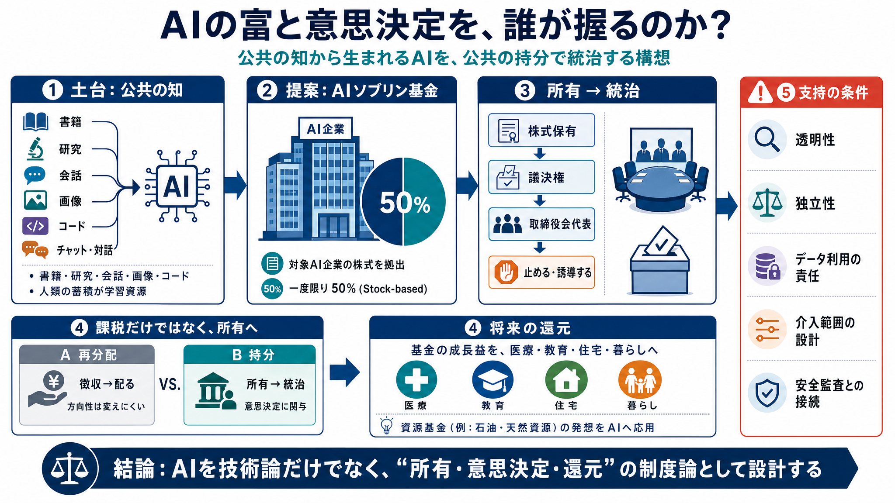

Senator Sanders Delivers Remarks on the American A.I. ... - YouTube
Senator Sanders Delivers Remarks on the American A.I. Sovereign Wealth Fund Act Legislation The Union Herald 3320 subscr…

生成AIは、書籍・音楽・報道・研究・会話・画像・コードなどの“人類の蓄積”を学習して成立します。
誰が決め、誰が利益を得るのか—これを統治（ガバナンス）の問題として再定義します。
経済・民主主義・教育・環境・メンタル面など、広い領域に波及します。
AIは独立して生まれた技術ではなく、世代を超えた人々の成果から学びます。
利益配分が偏れば、社会側の納得が得られにくくなります。
書籍／音楽／報道／研究／会話／画像／コード…人類の蓄積が学習資源になります。
利益が少数に偏るなら、公共を土台にした正当性が弱まる、という主張です。
単なる再分配ではなく、議決権や取締役会での代表権を通じて意思決定へ関与します。
公共が“株主”になることで、国民の利益に反する決定を止めたり、政策へ誘導したりします。
“50%”を株式として拠出し、国家基金の原資（持分）を形成します。
株式を通じて議決権・取締役会の代表権を得て、方向づけの力を持ちます。
国家基金が企業の株式を保有する（公共の持分）。
議決権・取締役会の代表権で、意思決定へ介入可能になる。
国民の利益に反する決定を止め、社会的な政策へ寄せる。
石油基金：資源収益を長期運用し、公共へ還元するモデル。
資産基金：資源に由来する富を制度化し、国民へ配分する発想。
集めて分けるだけでは、企業の方向性そのものを変えにくい。
株主として議決・取締役会で影響できれば、“止める・誘導する”が可能になる。
基金の資産増加（AI関連の株式保有によるリターン）。
現金給付だけでなく、医療・教育・住宅などの基盤にも。
資源由来の富を還元する“ソブリン基金型”の転用。
“誰が決めるのか”を前面化し、株式で制度的に関与する。
50%課税で株式基金を作り、資産運用の成否が鍵になる。
AIが人類の知に基づくなら成果を社会へ還元すべきだ。
政府が株主になり、取締役会で何をどこまで制御できるかが課題。
暴走リスクへの接続は示唆されるが、安全対策との直結は十分でない。
運用メカニズムや支出優先順位は今後の法案詳細に委ねられる。
目的が“暮らしの底上げ”なら受容を得やすい可能性がある。
制度が機能するかは、データ・責任、透明性、独立性、保険設計に依存する。
学習データの「無断・無償」を広く示唆する一方、契約・権利処理の具体が十分でない。
AIの価値や基金の成長は不確実で、下振れ時の還元設計や財源の安定性が薄い。
政治介入が過度になると、投資インセンティブや技術開発の柔軟性を損ね得る。
ガバナンス提案と安全対策（監査・評価・アラインメント等）の結びつきが明示されにくい。
50%課税（ストック・ベース）→株式拠出→国家基金の持分、という設計。
利益への課税だけでなく“方向づけ”が必要なので、株主の権利（議決権等）が重視される。
株式を通じた統治は、単なる再分配よりも“止める／誘導する”力になり得る。
データ権利、透明性・独立性、下振れ時の保険、政治介入の範囲—ここを詰める必要がある。
American A.I. Sovereign Wealth Fund Act
（米国AIソブリン・ウェルス・ファンド法案）
一度限りの50%課税（ストック・ベース）
→ 国家基金が株式保有 → 議決・代表権
ノルウェー石油基金／アラスカ資産基金
→ 資源由来の富を公共へ還元する発想
Senator Sanders Delivers Remarks on the American A.I. Sovereign Wealth Fund Act Legislation The Union Herald 3320 subscr…
# [Video](https://www.facebook.com/watch/). [Video 1](https://www.facebook.com/berniesanders/videos/i-will-soon-be-intro…
Reason.com - Free Minds and Free Markets. ## Sanders' plan would impose a one-time tax of 50 percent of AI companies' st…
To donate by check, phone, or other method, see our More Ways to Give page. US Sen. Bernie Sanders (I-Vt.) speaks during…
# Introducing the American AI Sovereign Wealth Fund Act -Bernie Sanders : r/georgism. [Skip to main content](https://www…